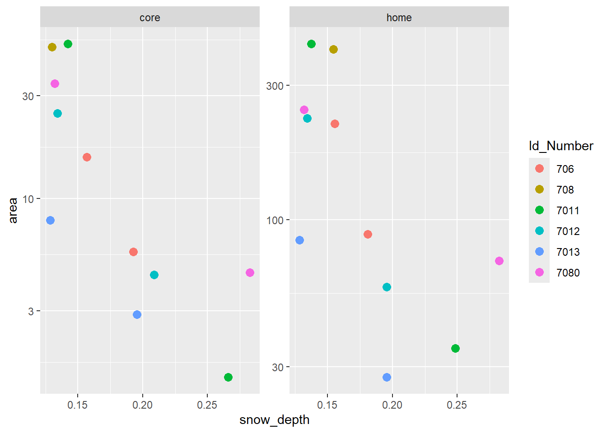
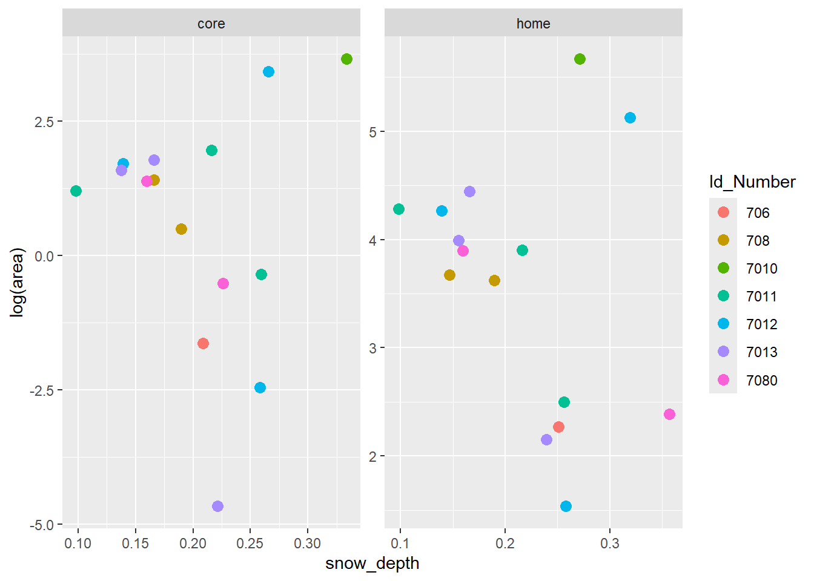
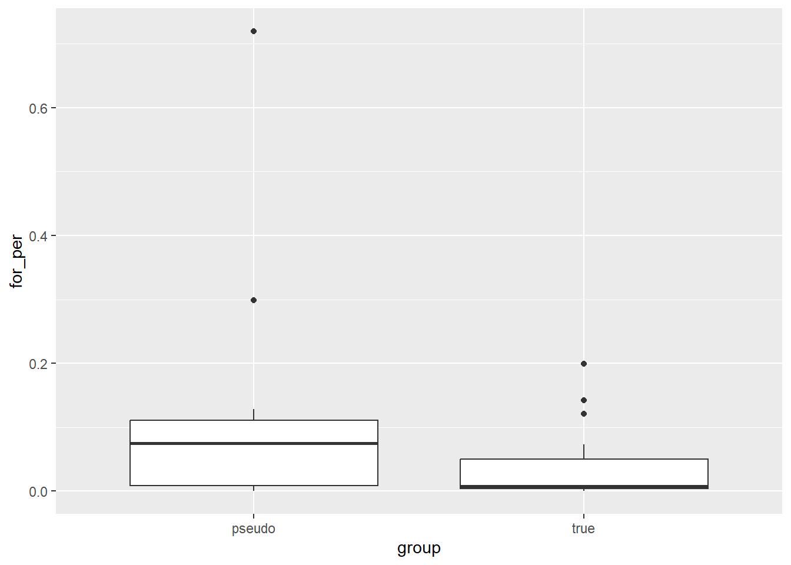

sm_crop <- terra::rast(here("data/processed/sm_crop.nc"),
drivers="NETCDF")
daterange <- seq( as.Date("2007-01-01"), as.Date("2012-12-31"), by="+1 day")
snow_wint_func <- function(id, range){
year <- musk_seascontwint %>%
filter(range_id == !!id, range == !!range) %>%
pull(year_min)
zones <- rasterize(musk_seascontwint %>%
filter(range_id == !!id, range == !!range) %>%
sf::st_transform(terra::crs(sm_crop)) %>%
vect(),
sm_crop, touches = TRUE)
rowids <- which(month(daterange)>=11&year(daterange)==year|
month(daterange)<=3&year(daterange)==(year+1))
zonal(sm_crop[[rowids]], zones, "mean", wide = FALSE) %>%
mutate(date = daterange[rowids],
range_id = !!id,
range = !!range) %>%
select(-layer, -zone)
}
musk_wint_home <- musk_seascontwint %>%
filter(season == "Winter",
range == "home",
seas_length > 115
) %>%
pull(range_id) %>%
map(function(.x){snow_wint_func(.x, "home")}) %>%
list_rbind()
musk_wint_core <- musk_seascontwint %>%
filter(season == "Winter",
range == "core",
seas_length > 115
) %>%
pull(range_id) %>%
map(function(.x){snow_wint_func(.x, "core")}) %>%
list_rbind()
musk_wint <- bind_rows(musk_wint_home, musk_wint_core)Home Range Modelling
Now we will look to model variables that are likely to influence the size of home ranges. Since we have few observations per season (sample size 12 - 15), we want 1 - 2 explantory variables per season model. Average snow cover during the winter and calving seasons may impact home range size, with individuals being restricted from moving large distances. During the summer, the percent of landcover suitable for foraging or number of foraging patches may impact the size of home ranges with larger home ranges occurring when individuals need to travel more often or further to get to foraging areas. Other barriers to movement may also affect home range size, including ridges and lakes.
Home Range Size Models
First we will examine differences in the home range over time for each muskoxen.
Let’s start by calculating average snow depth within each winter and calving home range. To be consistent across years and individuals, we will estimate mean snow depth across the same period ranging from the start November to the end of March for winter and March for calving. These periods roughly correspond to the shortest seasons across the data and include the most extreme snow depths.
Winter Season Model
We’ll start by estimating average snow depth for winter and running model with muskox ID as a random effect. For this model, we will use the winter home range estimates that were limited to the months January-March to control for season length and to focus on the periods of highest snow depth.
musk_wint_sum <- musk_wint %>%
group_by(range_id, range) %>%
summarise(snow_depth = mean(value)) %>%
left_join(musk_seascontwint %>%
select(range_id, range, year_min, seas_length, area, Id_Number))
saveRDS(musk_wint_sum, here("output/musk_wint_sum.rds"))
musk_wint_sum %>%
ggplot(aes(x = snow_depth, y = area, colour = Id_Number)) +
geom_point(size = 3) +
scale_y_log10() +
facet_wrap(~range, scales = "free")
wint_home_mod <- nlme::lme(log(area)~scale(snow_depth), random=~1|Id_Number,
data = musk_wint_sum %>% filter(range == "home"))
summary(wint_home_mod)Linear mixed-effects model fit by REML
Data: musk_wint_sum %>% filter(range == "home")
AIC BIC logLik
32.09875 32.88765 -12.04938
Random effects:
Formula: ~1 | Id_Number
(Intercept) Residual
StdDev: 0.5483609 0.5315927
Fixed effects: log(area) ~ scale(snow_depth)
Value Std.Error DF t-value p-value
(Intercept) 4.81230 0.2770874 5 17.367446 0.0000
scale(snow_depth) -0.71062 0.1768201 4 -4.018886 0.0159
Correlation:
(Intr)
scale(snow_depth) 0.013
Standardized Within-Group Residuals:
Min Q1 Med Q3 Max
-0.8591322 -0.5728005 -0.5153681 0.6586580 1.1206790
Number of Observations: 11
Number of Groups: 6 MuMIn::r.squaredGLMM(wint_home_mod) R2m R2c
[1,] 0.4640211 0.7403306wint_core_mod <- nlme::lme(log(area)~scale(snow_depth), random=~1|Id_Number,
data = musk_wint_sum %>% filter(range == "core"))
summary(wint_core_mod)Linear mixed-effects model fit by REML
Data: musk_wint_sum %>% filter(range == "core")
AIC BIC logLik
32.34906 33.13796 -12.17453
Random effects:
Formula: ~1 | Id_Number
(Intercept) Residual
StdDev: 0.5501878 0.5434197
Fixed effects: log(area) ~ scale(snow_depth)
Value Std.Error DF t-value p-value
(Intercept) 2.357580 0.2798785 5 8.423586 0.0004
scale(snow_depth) -1.062493 0.1830115 4 -5.805610 0.0044
Correlation:
(Intr)
scale(snow_depth) 0.025
Standardized Within-Group Residuals:
Min Q1 Med Q3 Max
-0.9291835 -0.4181924 -0.3645884 0.3755136 1.2743279
Number of Observations: 11
Number of Groups: 6 MuMIn::r.squaredGLMM(wint_core_mod) R2m R2c
[1,] 0.6537087 0.8289974# set.seed(5)
# wint_home_brms <- brms::brm(log(area)~scale(snow_depth) + (1|Id_Number),
# data = musk_wint_sum %>% filter(range == "home"),
# family = "gaussian",
# chains = 3,
# cores = 3,
# iter = 4000,
# control = list(adapt_delta = 0.99))
# summary(wint_home_brms)
# set.seed(5)
# wint_core_brms <- brms::brm(log(area)~scale(snow_depth) + (1|Id_Number),
# data = musk_wint_sum %>% filter(range == "core"),
# family = "gaussian",
# chains = 3,
# cores = 3,
# iter = 4000,
# control = list(adapt_delta = 0.99))
# summary(wint_core_brms)Clearly, there is a negative relationship between snow depth and winter range size: as snow depth increases, the size of winter home ranges tends to decrease. In addition, each muskox with multiple years of data had a smaller winter home range in the year with deeper snow.
It’s also worth noting that the three instances with the deepest snow all occurred in 2010, but all three home ranges occurred in spatially distinct areas. There could be another weather variable correlated with years that is responsible for the relationship, but snow depth seems the most plausible given previous research. Also, if we include the three winter home ranges that were only calculated for part of the season (due to starting or ending mid winter), they fit the trend as 2007 and 2011 were also years with deeper snow.
Calving Season Model
Next we will look at the same relationship for the calving seasons:
sm_crop <- terra::rast(here("data/processed/sm_crop.nc"),
drivers="NETCDF")
daterange <- seq( as.Date("2007-01-01"), as.Date("2012-12-31"), by="+1 day")
snow_calv_func <- function(id, range){
year <- musk_seascont %>%
filter(range_id == !!id, range == !!range) %>%
pull(year_min)
zones <- rasterize(musk_seascont %>%
filter(range_id == !!id, range == !!range) %>%
sf::st_transform(terra::crs(sm_crop)) %>%
terra::vect(),
sm_crop, touches = TRUE)
rowids <- which(month(daterange)==4&year(daterange)==year)
zonal(sm_crop[[rowids]], zones, "mean", wide = FALSE) %>%
mutate(date = daterange[rowids],
range_id = !!id,
range = !!range) %>%
select(-layer, -zone)
}
musk_calv_home <- musk_seascont %>%
filter(season == "Calving",
range == "home"
) %>%
pull(range_id) %>%
map(function(.x){snow_calv_func(.x, "home")}) %>%
list_rbind()
musk_calv_core <- musk_seascont %>%
filter(season == "Calving",
range == "core"
) %>%
pull(range_id) %>%
map(function(.x){snow_calv_func(.x, "core")}) %>%
list_rbind()
musk_calv <- bind_rows(musk_calv_home, musk_calv_core)musk_calv_sum <- musk_calv %>%
group_by(range_id, range) %>%
summarise(snow_depth = mean(value)) %>%
left_join(musk_seascont %>%
select(range_id, range, year_min, seas_length, area, Id_Number))
musk_calv_sum %>%
ggplot(aes(x = snow_depth, y = log(area), colour = Id_Number)) +
geom_point(size = 3) +
facet_wrap(~range, scales = "free")
calv_home_mod <- lme4::lmer(log(area)~scale(snow_depth) + (1|Id_Number),
data = musk_calv_sum %>% filter(range == "home"))
summary(calv_home_mod)Linear mixed model fit by REML ['lmerMod']
Formula: log(area) ~ scale(snow_depth) + (1 | Id_Number)
Data: musk_calv_sum %>% filter(range == "home")
REML criterion at convergence: 46.4
Scaled residuals:
Min 1Q Median 3Q Max
-1.57913 -0.61756 0.05808 0.28342 1.99584
Random effects:
Groups Name Variance Std.Dev.
Id_Number (Intercept) 0.000 0.000
Residual 1.375 1.172
Number of obs: 15, groups: Id_Number, 7
Fixed effects:
Estimate Std. Error t value
(Intercept) 3.5817 0.3027 11.831
scale(snow_depth) -0.3279 0.3134 -1.046
Correlation of Fixed Effects:
(Intr)
scl(snw_dp) 0.000
optimizer (nloptwrap) convergence code: 0 (OK)
boundary (singular) fit: see help('isSingular')MuMIn::r.squaredGLMM(calv_home_mod) R2m R2c
[1,] 0.07252154 0.07252154calv_core_mod <- lme4::lmer(log(area)~scale(snow_depth)+(1|Id_Number),
data = musk_calv_sum %>% filter(range == "core"))
summary(calv_core_mod)Linear mixed model fit by REML ['lmerMod']
Formula: log(area) ~ scale(snow_depth) + (1 | Id_Number)
Data: musk_calv_sum %>% filter(range == "core")
REML criterion at convergence: 63.9
Scaled residuals:
Min 1Q Median 3Q Max
-2.2820 -0.4284 0.3189 0.4718 1.4036
Random effects:
Groups Name Variance Std.Dev.
Id_Number (Intercept) 0.000 0.000
Residual 5.277 2.297
Number of obs: 15, groups: Id_Number, 7
Fixed effects:
Estimate Std. Error t value
(Intercept) 0.59722 0.59314 1.007
scale(snow_depth) -0.07815 0.61396 -0.127
Correlation of Fixed Effects:
(Intr)
scl(snw_dp) 0.000
optimizer (nloptwrap) convergence code: 0 (OK)
boundary (singular) fit: see help('isSingular')There is still a negative relationship present between snow depth and calving home range size, but it is no longer significant. Given that we do not actually know which females had calves every year, the presence/absence of calves could have a large impact on the area traversed during this time. For instance, we know that muskox 7010 in 2009 was not seen with a calf during any of the surveys and happens to have the largest home range size during the calving season. Similarly, muskox 7012 in 2009, which had the second largest home range, was not with a calf until May at the earliest. This means 7012 was not restricted from moving around during the deepest parts of the calving season. Removing these two points makes for a much stronger relationship; however this pattern is not universal as there were other muskoxen in 2008 and 2009 that were without calves during April and still had small home ranges. The fact that these muskoxen travel in groups needs to be taken into consideration as well because even if the collared muskoxen does not have a calf, its movements may still be restricted by the movements of the group. Most groups observed in 2008 and 2009 had at least one calf during the calving season. One exception was 7010 in 2009, which was observed to be in a group with a calf at the beginning of April but not in May.
Summer Season Model
For the summer season, length of season and forage availability are likely to be more important for determining home range size than weather conditions (though extreme heat and bugs in the summer could impact movement as well). Like winter and calving season models, we will stick with one predictor variable to avoid issues with overfitting. In this case, we will look at the percentage of shrubland and grassland within each home range, with the hypothesis that areas with less shrubland/grassland will mean muskoxen will need to travel further to meet their energy demands and consequently have larger home ranges.
We’ll start by loading the land cover data and calculating percent cover.
lc_2010_crop <- terra::rast(here("data/processed/lc_2010_crop.tif"))
lc_atts <- readRDS(here("data/processed/lc_atts.rds"))
### land cover ids 8 and 10 coorespond to the land covers of interest
lcc_func <- function(id, range){
points <- musk_seascont %>%
filter(range_id == !!id, range == !!range) %>%
sf::st_transform(terra::crs(lc_2010_crop))
lc_2010_crop2 <- terra::crop(lc_2010_crop, points)
zones <- rasterize(points %>%
terra::vect(),
lc_2010_crop2, touches = TRUE)
ct <- crosstab(c(zones, lc_2010_crop2)) %>%
as_tibble() %>%
mutate(range_id = !!id,
range = !!range)
}
musk_sum_home <- musk_seascont %>%
filter(season == "Summer",
range == "home") %>%
pull(range_id) %>%
map(function(.x){lcc_func(.x, "home")}) %>%
list_rbind()
musk_sum_core <- musk_seascont %>%
filter(season == "Summer",
range == "core") %>%
pull(range_id) %>%
map(function(.x){lcc_func(.x, "core")}) %>%
list_rbind()
musk_sum <- bind_rows(musk_sum_home, musk_sum_core)musk_sum_sum <- musk_sum %>%
mutate(for_lc = ifelse(cover%in%c("Temperate or sub-polar shrubland",
"Temperate or sub-polar grassland",
"Sub-polar or polar shrubland-lichen-moss",
"Sub-polar or polar grassland-lichen-moss",
"Sub-polar or polar barren-lichen-moss"),1,0)) %>%
group_by(range_id, range) %>%
summarise(total = sum(n),
for_tot = sum(n*for_lc),
for_per = for_tot/total) %>%
left_join(musk_seascont %>%
select(range_id, range, year_min, seas_length, area, Id_Number))
musk_sum_sum %>%
ggplot(aes(x = for_per, y = log(area), colour = Id_Number)) +
geom_point(size = 3) +
facet_wrap(~range, scales = "free")sum_home_mod <- nlme::lme(log(area)~scale(for_per), random=~1|Id_Number,
data = musk_sum_sum %>% filter(range == "home"))
summary(sum_home_mod)Linear mixed-effects model fit by REML
Data: musk_sum_sum %>% filter(range == "home")
AIC BIC logLik
14.21694 15.80852 -3.10847
Random effects:
Formula: ~1 | Id_Number
(Intercept) Residual
StdDev: 0.5533838 0.09158007
Fixed effects: log(area) ~ scale(for_per)
Value Std.Error DF t-value p-value
(Intercept) 9.690539 0.21127654 6 45.86661 0.0000
scale(for_per) 0.154817 0.07617671 5 2.03235 0.0978
Correlation:
(Intr)
scale(for_per) 0.046
Standardized Within-Group Residuals:
Min Q1 Med Q3 Max
-1.48503085 -0.29697479 0.01338312 0.29728898 1.44623295
Number of Observations: 13
Number of Groups: 7 sum_core_mod <- nlme::lme(log(area)~scale(for_per), random=~1|Id_Number,
data = musk_sum_sum %>% filter(range == "core"))
summary(sum_core_mod)Linear mixed-effects model fit by REML
Data: musk_sum_sum %>% filter(range == "core")
AIC BIC logLik
28.5491 30.14068 -10.27455
Random effects:
Formula: ~1 | Id_Number
(Intercept) Residual
StdDev: 0.4624548 0.344547
Fixed effects: log(area) ~ scale(for_per)
Value Std.Error DF t-value p-value
(Intercept) 7.475775 0.2033897 6 36.75592 0.0000
scale(for_per) -0.041506 0.1359836 5 -0.30523 0.7725
Correlation:
(Intr)
scale(for_per) 0.049
Standardized Within-Group Residuals:
Min Q1 Med Q3 Max
-1.2452052 -0.3128850 -0.1099126 0.3078064 1.3706162
Number of Observations: 13
Number of Groups: 7 A lot of the variation in home range size is explained by differences in individual muskoxen; i.e. summer home ranges are similar in size across seasons, and we already know that they share high overlap across years.
The relationship with forage percent cover is in opposition to the original hypothesis. Larger home ranges appear to be correlated with a larger percent of forage land cover, though not significant. Maybe if there is a high density of foraging areas, it makes sense to target foraging areas that haven’t been visited lately so there is a maximal amount of forage. For individuals in areas with low density of foraging areas, maybe it makes more sense to not travel long distances to new foraging patches and just stay with the ones that are nearby. By this logic, we might expect the area immediately surrounding home ranges to have a low density of forage areas.
Before we compare the areas inside and outside of summer home ranges lets look to see if season length has any effect on summer season size.
musk_seascont %>%
filter(season == "Summer") %>%
ggplot(aes(x = seas_length, y = log(area), colour = Id_Number)) +
geom_point(size = 3) +
facet_wrap(~range, scales = "free")sum_home_length_mod <- nlme::lme(log(area)~scale(seas_length),
random=~1|Id_Number,
data = musk_seascont %>%
filter(season == "Summer",
range == "home"))
summary(sum_home_length_mod)Linear mixed-effects model fit by REML
Data: musk_seascont %>% filter(season == "Summer", range == "home")
AIC BIC logLik
19.28732 20.8789 -5.64366
Random effects:
Formula: ~1 | Id_Number
(Intercept) Residual
StdDev: 0.57154 0.1183247
Fixed effects: log(area) ~ scale(seas_length)
Value Std.Error DF t-value p-value
(Intercept) 9.667986 0.21908537 6 44.12885 0.0000
scale(seas_length) -0.016793 0.03512815 5 -0.47806 0.6528
Correlation:
(Intr)
scale(seas_length) 0.012
Standardized Within-Group Residuals:
Min Q1 Med Q3 Max
-0.92448826 -0.44761859 -0.04991734 0.37512118 1.36661453
Number of Observations: 13
Number of Groups: 7 sum_core_length_mod <- nlme::lme(log(area)~scale(seas_length),
random=~1|Id_Number,
data = musk_seascont %>%
filter(season == "Summer",
range == "core"))
summary(sum_core_length_mod)Linear mixed-effects model fit by REML
Data: musk_seascont %>% filter(season == "Summer", range == "core")
AIC BIC logLik
28.99783 30.58941 -10.49892
Random effects:
Formula: ~1 | Id_Number
(Intercept) Residual
StdDev: 0.4396887 0.3524217
Fixed effects: log(area) ~ scale(seas_length)
Value Std.Error DF t-value p-value
(Intercept) 7.478075 0.1969522 6 37.96899 0.0000
scale(seas_length) 0.044618 0.1037080 5 0.43022 0.6849
Correlation:
(Intr)
scale(seas_length) 0.027
Standardized Within-Group Residuals:
Min Q1 Med Q3 Max
-1.3382618 -0.3794572 -0.1413570 0.3749665 1.2782830
Number of Observations: 13
Number of Groups: 7 There is no significant relationship. If anything, there is a slight negative trend with season length. In fact, as we observed previously, summer home ranges are fairly consistent in size within individuals despite differences in season length across years (see 7011, 7012, 7013, and 708 in graph above), meaning our previous finding of the availability of foraging patches is probably more important.
Home Range Selection Models
Instead of comparing the home range to the adjacent landscape, let’s compare the home ranges to random locations within the study area with the same shape.
Let’s start by generating random points to move the centers of each home range. We’ll restrict these random points to the minimum convex polygon surrounding all telemetry locations. We’ll also ensure that home ranges do not overlap large water bodies by more than 10% (a similar threshold for real home ranges).
study_area <- st_convex_hull(st_union(musk_collar_filt$geometry))
hr_polygons <- readRDS(here("output/akde_conts.rds"))
hr_shift <- function(hr, Id, season, seed){
lc_2010_crop <- terra::rast(here("data/processed/lc_2010_crop.tif"))
if(season == "Summer"){boundary <- hr_polygons %>%
filter(Id_Number == Id) %>%
st_buffer(20000)
}else{boundary <- hr_polygons %>% filter(Id_Number == Id)}
set.seed(seed)
### repeat for 10 trials until the proportion of lakes is not too high
for (i in 1:10){
point <- st_sample(boundary, size = 1, type = "random") %>%
st_transform(st_crs(hr))
diff = point - st_centroid(hr)
poly <- (hr + diff) %>%
st_set_crs(st_crs(hr))
poly2 <- poly %>%
sf::st_transform(terra::crs(lc_2010_crop))
lc_2010_crop2 <- terra::crop(lc_2010_crop, poly2)
zones <- rasterize(poly2 %>%
terra::vect(),
lc_2010_crop2, touches = TRUE)
ct <- crosstab(c(zones, lc_2010_crop2)) %>%
as_tibble() %>%
mutate(water = ifelse(cover=="Water",1,0)) %>%
summarise(total = sum(n),
wat_tot = sum(n*water),
wat_per = wat_tot/total) %>%
pull(wat_per)
if(ct<=0.1){
return(poly)
}
}
}
musk_pseudohr <- musk_seascont %>%
filter(range == "home") %>%
mutate(seed = 1:n()) %>%
rowwise() %>%
mutate(new_geometry = hr_shift(geometry, Id_Number, season, seed))Let’s look at the proportion of forage land cover again. This time, we will use a logistic model to compare used vs available home ranges (real vs. pseudo) to see if there is a significant difference. We will use a random effect of muskox ID for the slope term, as we do not expect the intercepts to vary across individuals because they have the same proportion of success and failures
|---------|---------|---------|---------|
=========================================
Summer Model
musk_sum_lc <- hr_forage %>%
left_join(musk_tpi) %>%
left_join(musk_pseudohr %>%
st_drop_geometry() %>%
select(range_id, Id_Number, year_min, season)) %>%
mutate(true_range = ifelse(group == "true",1,0)) %>%
filter(season == "Summer")
saveRDS(musk_sum_lc, here("output/musk_sum_lc.rds"))
musk_sum_lc %>%
ggplot(aes(x = group, y = for_per)) +
geom_boxplot() musk_sum_lc %>%
ggplot(aes(x = group, y = value)) +
geom_boxplot() musk_sum_lc %>%
ungroup() %>%
select(range_id, group, for_per, value) %>%
pivot_wider(names_from = group, values_from = c(for_per, value)) %>%
mutate(diff_for = for_per_pseudo - for_per_true,
diff_val = value_pseudo - value_true) %>%
select(diff_for, diff_val) %>%
cor() diff_for diff_val
diff_for 1.0000000 0.5954548
diff_val 0.5954548 1.0000000cor(musk_sum_lc$value, musk_sum_lc$for_per)[1] 0.5068969set.seed(5)
sum_pseudo_brm <- brms::brm(true_range ~ scale(for_per) +
(1|Id_Number), family = "bernoulli",
data = musk_sum_lc,
chains = 3,
cores = 3,
iter = 10000,
control = list(adapt_delta=0.9))
summary(sum_pseudo_brm) Family: bernoulli
Links: mu = logit
Formula: true_range ~ scale(for_per) + (1 | Id_Number)
Data: musk_sum_lc (Number of observations: 26)
Draws: 3 chains, each with iter = 10000; warmup = 5000; thin = 1;
total post-warmup draws = 15000
Multilevel Hyperparameters:
~Id_Number (Number of levels: 7)
Estimate Est.Error l-95% CI u-95% CI Rhat Bulk_ESS Tail_ESS
sd(Intercept) 0.68 0.61 0.02 2.27 1.00 6235 5368
Regression Coefficients:
Estimate Est.Error l-95% CI u-95% CI Rhat Bulk_ESS Tail_ESS
Intercept 0.05 0.59 -1.07 1.27 1.00 10018 6752
scalefor_per 1.50 0.62 0.43 2.85 1.00 12965 7222
Draws were sampled using sampling(NUTS). For each parameter, Bulk_ESS
and Tail_ESS are effective sample size measures, and Rhat is the potential
scale reduction factor on split chains (at convergence, Rhat = 1).It looks like, as with the buffer approach, home ranges are selected for their proportion of foraging area. We needed to use a Bayesian approach though, because the lme4 models were having a difficult time estimating the variance of the random effect, possibly a result of the small sample size.
Winter Model
musk_wint_tpi <- hr_forage %>%
left_join(musk_tpi) %>%
left_join(musk_pseudohr %>%
st_drop_geometry() %>%
select(range_id, Id_Number, year_min, season)) %>%
mutate(true_range = ifelse(group == "true",1,0)) %>%
filter(season == "Winter")
saveRDS(musk_wint_tpi, here("output/musk_wint_tpi.rds"))
musk_wint_tpi %>%
ggplot(aes(x = group, y = for_per)) +
geom_boxplot() musk_wint_tpi %>%
ggplot(aes(x = group, y = value)) +
geom_boxplot() musk_wint_tpi %>%
ungroup() %>%
select(range_id, group, for_per, value) %>%
pivot_wider(names_from = group, values_from = c(for_per, value)) %>%
mutate(diff_for = for_per_pseudo - for_per_true,
diff_val = value_pseudo - value_true) %>%
select(diff_for, diff_val) %>%
cor() diff_for diff_val
diff_for 1.0000000 0.2712866
diff_val 0.2712866 1.0000000set.seed(5)
wint_pseudo_brm <- brms::brm(true_range ~ scale(value) + scale(for_per) +
(1|Id_Number), family = "bernoulli",
data = musk_wint_tpi,
chains = 3,
cores = 3,
iter = 10000,
control = list(adapt_delta =0.9))
summary(wint_pseudo_brm) Family: bernoulli
Links: mu = logit
Formula: true_range ~ scale(value) + scale(for_per) + (1 | Id_Number)
Data: musk_wint_tpi (Number of observations: 24)
Draws: 3 chains, each with iter = 10000; warmup = 5000; thin = 1;
total post-warmup draws = 15000
Multilevel Hyperparameters:
~Id_Number (Number of levels: 6)
Estimate Est.Error l-95% CI u-95% CI Rhat Bulk_ESS Tail_ESS
sd(Intercept) 1.10 1.00 0.03 3.74 1.00 3138 3710
Regression Coefficients:
Estimate Est.Error l-95% CI u-95% CI Rhat Bulk_ESS Tail_ESS
Intercept 0.06 0.70 -1.32 1.55 1.00 6344 5225
scalevalue 1.89 1.11 0.32 4.70 1.00 4764 2707
scalefor_per -0.64 0.72 -2.28 0.59 1.00 5469 3605
Draws were sampled using sampling(NUTS). For each parameter, Bulk_ESS
and Tail_ESS are effective sample size measures, and Rhat is the potential
scale reduction factor on split chains (at convergence, Rhat = 1).Home ranges are associated with higher topographic position indices indicating winter home ranges are more often elevated relative to their surroundings. Let’s plot the winter home ranges on the TPI raster to better visualize it:
Calving Model
musk_calv_tpi <- hr_forage %>%
left_join(musk_tpi) %>%
left_join(musk_pseudohr %>%
st_drop_geometry() %>%
select(range_id, Id_Number, year_min, season)) %>%
mutate(true_range = ifelse(group == "true",1,0)) %>%
filter(season == "Calving")
saveRDS(musk_calv_tpi, here("output/musk_calv_tpi.rds"))
musk_calv_tpi %>%
ggplot(aes(x = group, y = for_per)) +
geom_boxplot() 
musk_calv_tpi %>%
ggplot(aes(x = group, y = value)) +
geom_boxplot() musk_calv_tpi %>%
ungroup() %>%
select(range_id, group, for_per, value) %>%
pivot_wider(names_from = group, values_from = c(for_per, value)) %>%
mutate(diff_for = for_per_pseudo - for_per_true,
diff_val = value_pseudo - value_true) %>%
select(diff_for, diff_val) %>%
cor() diff_for diff_val
diff_for 1.0000000 0.1889097
diff_val 0.1889097 1.0000000set.seed(5)
calv_pseudo_brm <- brms::brm(true_range ~ scale(value) +
scale(for_per) +
(1|Id_Number), family = "bernoulli",
data = musk_calv_tpi,
chains = 3,
cores = 3,
iter = 10000,
control = list(adapt_delta =0.9))
summary(calv_pseudo_brm) Family: bernoulli
Links: mu = logit
Formula: true_range ~ scale(value) + scale(for_per) + (1 | Id_Number)
Data: musk_calv_tpi (Number of observations: 30)
Draws: 3 chains, each with iter = 10000; warmup = 5000; thin = 1;
total post-warmup draws = 15000
Multilevel Hyperparameters:
~Id_Number (Number of levels: 7)
Estimate Est.Error l-95% CI u-95% CI Rhat Bulk_ESS Tail_ESS
sd(Intercept) 0.49 0.44 0.02 1.62 1.00 7970 7156
Regression Coefficients:
Estimate Est.Error l-95% CI u-95% CI Rhat Bulk_ESS Tail_ESS
Intercept -0.16 0.49 -1.15 0.80 1.00 11990 9205
scalevalue 0.20 0.45 -0.67 1.11 1.00 19018 9787
scalefor_per -1.35 0.81 -3.10 -0.01 1.00 15367 9786
Draws were sampled using sampling(NUTS). For each parameter, Bulk_ESS
and Tail_ESS are effective sample size measures, and Rhat is the potential
scale reduction factor on split chains (at convergence, Rhat = 1).